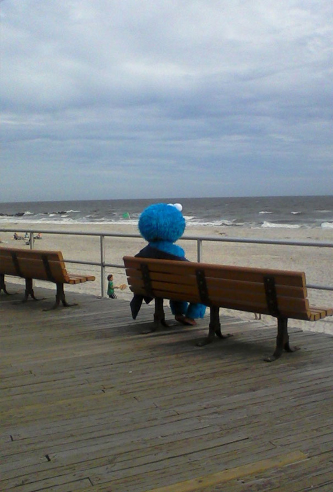

All must heed the warning of the soothsayer, Promethius. He spoke of times when the denizens of the warm rock, Earth, would take to the high seas amid the chaos of the scurrying feet.
...Of when he ventured out to the beach from within the crass cityscape. The solar accompaniment was visibly intense, and the partakers of sand-based ruminations were donning wide brims and colored glasses.
The wind swept up particulates that agitated the soothsayer's humble and vulnerable eyes. So, there, on the arid cousin to the mighty expanse of soothing sustainance, he fell to his knees and cried out for aid.
But, aid was not offered, nor did it come. So on that sandy spot, he ravaged his sight with incessant pawing and rubbing.
In time, the agitants fell free with his tortured tears, and glorious sight was restored. Upon glimpsing the all-encompassing warble of the blue-green swill before him, he stood and became transfixed on the impossibly far horizon.